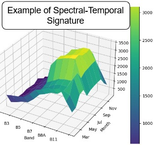
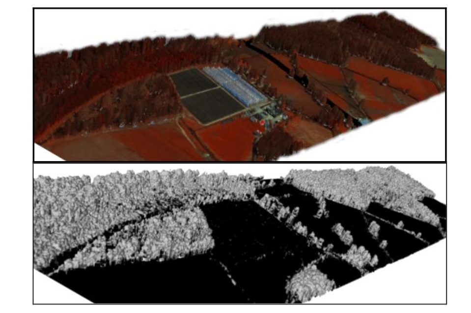

Tools
Explore the open-source tools developed by our research group.

PlotToSat
Efficient extraction of Sentinel-1 and Sentinel-2 time series across multiple regions, processed on the Google Earth Engine cloud platform.
Learn More

DASOS
Extraction of structural features from 3D windows and 2D metrics, and creation of 3D polygonal meshes from rasterised LiDAR data to tackle uneven point density.
Learn More
PlotToSat
- Open-source, scalable tool for generating Sentinel-1 and Sentinel-2 time-series signatures from distributed field plots and polygons
- Built using the Python API of Google Earth Engine, addressing major computational bottlenecks in EO data extraction
- Processed 18.3 TB of multi-tile Sentinel-1 and Sentinel-2 data for 15,962 forest plot regions across Spain in under 24 hours,
- Application on tree genera classification across Spain using NDVI time-series, revealing intra-genus heterogeneity - More info
- Used for land cover change detection at Samarra Archaeological City, indicating agricultural expansion - More info soon.
Github Stars
Github clones
Associated papers
DASOS
- Rasterised-based accumulation of LiDAR data into a 3D density volume for tackling uneven scanning patterns.
- Extraction of structural features from 3D windows and generation of 2D metrics for use in machine learning models.
- Construction of 3D polygonal meshes for realistic forest visualization.
- Used for estimating stand structure and diversity in Brazilian Atlantic Forests - More info.
- Used for detecting dead standing Eucalypt trees in native Australian forests - More info.
Github Stars
Associated papers
Projects
Explore our ongoing and completed projects.
People
Meet the researchers, and alumni.
Tools
Explore the open-source tools developed by our research group.
Join us
Become a member or collaborate.